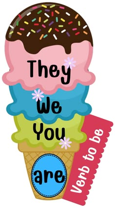

1. ¿Qué es el verbo "to be"?

El verbo "to be" es uno de los elementos clave en el idioma inglés, utilizado para expresar existencia, características o estados de ser de algo o alguien. En español, se traduce dependiendo del contexto, ya sea como "ser" o "estar". Es indispensable en la mayoría de las oraciones, ya que nos permite describir lo que somos, lo que estamos haciendo o cómo nos sentimos.
En inglés, las formas del verbo "to be" varían según la persona o el sujeto de la oración. Las formas más comunes son:
- I am: Yo soy/estoy
- You are: Tú eres/estás
- He is: Él es/está
- She is: Ella es/está
- It is: Eso es/está
- We are: Nosotros somos/estamos
- They are: Ellos son/están
Este verbo no solo se emplea para identificar o describir a una persona, sino también para indicar su estado o situación, ya sea físico, emocional o situacional. Ejemplos:
- "I am a teacher" (Yo soy un profesor) – Aquí, "am" indica la identidad.
- "She is happy" (Ella está feliz) – En este caso, "is" describe su estado emocional.